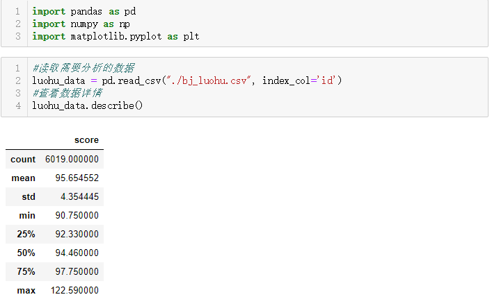

据说，北京落户的难度比加入美国国籍还高。而北京2018年首次实行积分入户制，让我们来分析一下首批通过积分入户拿到北京户口的数据。
首先从北京积分落户官网下载公示名单：
根据表格中的信息，我们主要从以下三个维度进行分析：
1.分值区域

结论：从条形图中可以看出，大部分人的分值都是在90~95分之间
2.落户年龄
结论：从饼图中可以看出，40~45岁这个年龄段满足积分落户的人数最多，占了总人数的61.3%
3.落户人所在的公司
结论：从上述二维表中可以看出，知名互联网公司入户北京的人数较多。